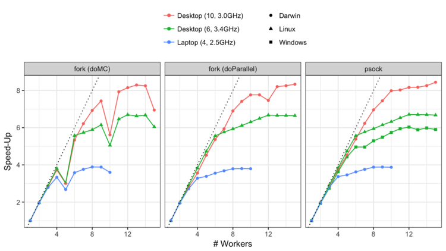
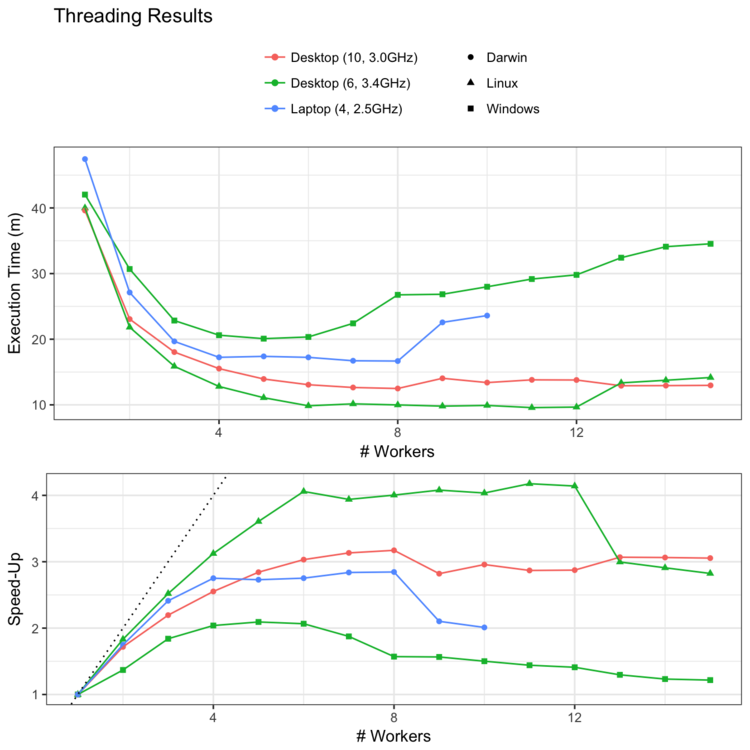

While you wait for that to finish, can I interest you in parallel processing?
caret has been able to utilize parallel processing for some time (before it was on CRAN in October 2007) using slightly different versions of the package. Around September of 2011, caret started using the foreach package was used to “harmonize” the parallel processing technologies thanks to a super smart guy named Steve Weston.
I’ve done a few benchmarks to quantify the benefits to parallel processing over the years. I just did another set since I just got a new iMacPro. This time, I put the code and results in a GitHub repo. The main questions that I wanted to answer were:
- Is the benefit the same across computers and operating systems?
- Is there any performance difference between parallel processing technologies (or packages)?
- For my test cases, is it better to parallelize resampling loops or the individual model fit?
The task I used was to tune a boosted classification tree model (via the xgboost) package over 25 random values of the seven tuning parameters. The data were simulated and contained 2,000 training set points and 115 numeric predictors. Five repeats of 10-fold cross-validation was used so that 1,250 separate models could be run in parallel. An example of the code is here.
I tested this using three machines:
- A 2015 MacBookPro (version 11,4) with a 2.5 GHz Intel Core i7 processor. It has 4 physical cores.
- A DIY machine built in January of 2016 using a 3.4 GHz Intel Core i7 processor (6 cores).
- A 2017 iMacPro (1,1) with a 3 GHz Intel Xeon W processor. There are 10 cores.
All the computers have >=8GB of memory. The DIY machine was running Ubuntu 16.04 as well as Windows 10. All of the builds used R 3.4.2 or higher.
The methods for parallelization were:
forking uses the
forksystem call to create new instances of the session (i.e. workers) that run parts of the computations. This is available on MacOS, unix, and linux. It is available toforeachvia thedoMCanddoParallelpackages. Historically, I have useddoMCfor my work but both were tested here.sockets via the
doParallelpackage. I don’t know a whole lot about socket connections but they have been around a long time via thesnowpackage and can run on all major operating systems.threading:
xgboosthas the option to useopenMPto parallelize the individual model fits.
This JSS paper from 2009 might be helpful.
Once nice thing about parallelism in caret is that you do not have to modify the package code. With foreach, you simply “register” a parallel backend and the caret functions automatically utilize the workers.
To be clear, the forking/socket approaches split the 1,250 model fits across the workers while the threading affects each individual model fit (one-at-a-time).
In each case, different number of workers were applied to the problems and the execution time was measured. Since these are all recent Intel processors, hyper-threading can be used. This means that, even though you have X physical cores, there are 2X “logical cores” that can perform independent operations. For that reason, we can add more workers than physical cores. The order of all runs were randomized and run in clear R sessions.
First, let’s look at the non-threading results. The raw execution times were:

When converted to speed-ups, we get:

The speed-up is the sequential time divided by the parallel time; a speed-up of 3 means that the parallel execution took a third less time than the sequential code.
My observations:
- As expected, the desktops were substantially faster than the laptop. The speeds also rank-ordered with the age of the computer.
- On the same machine, linux ran faster than windows by slightly less than a fold.
- It appears that the speed-ups are linear up until we go beyond the number of physical cores. There is incremental benefit to using logical cores but it is small.
- I’ve never seen a case where performance get’s substantially worse as you increase the number of workers. If the model is already fast (e.g. PLS) or your workers exceed system memory, this isn’t an issue.
- There was no real difference in performance between forking and sockets (at least using
doParallel). - The new iMacPro does really well. The speed-ups are linear up until about 8 or 9 cores. This means that an execution time of 38 minutes can be cut down to 4 or 5 minutes.
The doMC results are strange. When the number of workers is a multiple of 5, there is a performance hit. At first I thought this was an aberration until it was apparent that it occurred over two operating systems and three computers. Also, it is specific to doMC; forking using doParallel does not have the same issue. I’ve notified the doMC package maintainer about it.
What about threading? These runs had foreach run sequentially and allowed xgb.train to run in parallel by adjusting the nthread argument. The results:

This isn’t so great and really surprising (or fair). We are starting and stopping threads 1,250 times across the model tuning process. In general, we want to parallelize the longest running part of the algorithm. I have no doubt of the utility of threading the computations for a single model but it can be counterproductive when model is called repeatedly.
The code and results can be found here if you are interested in more details.